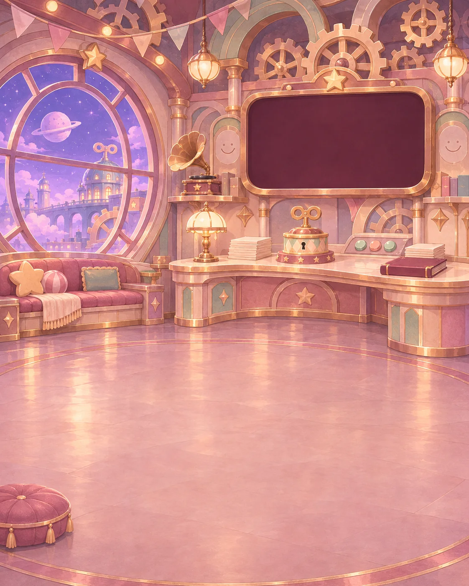
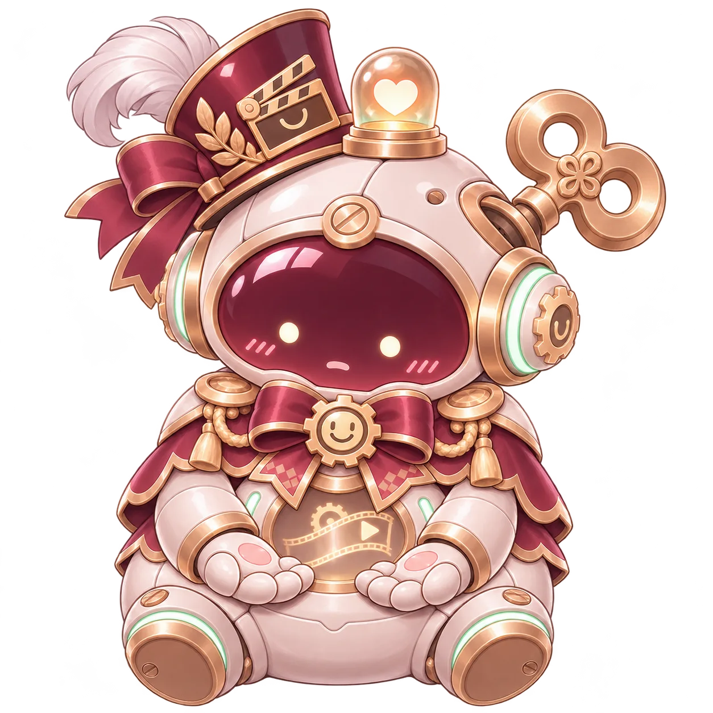
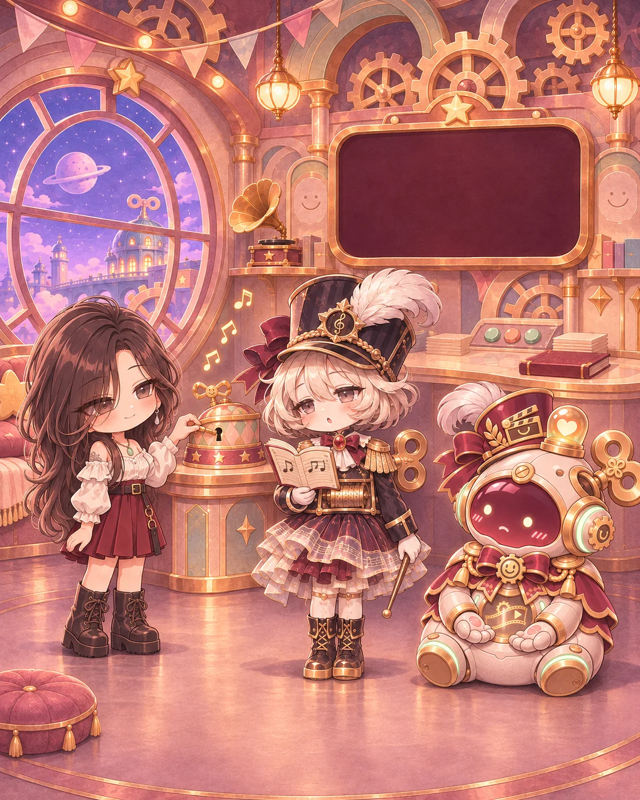
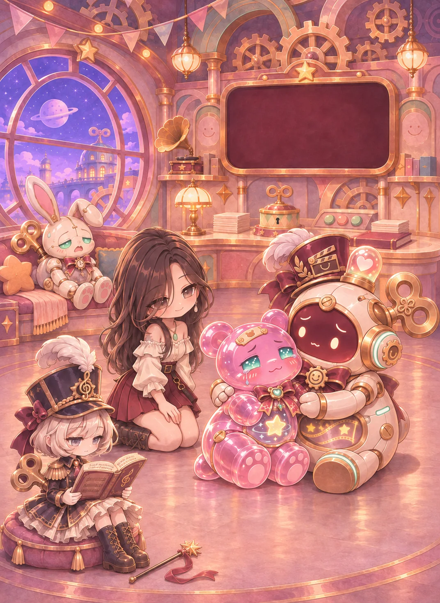
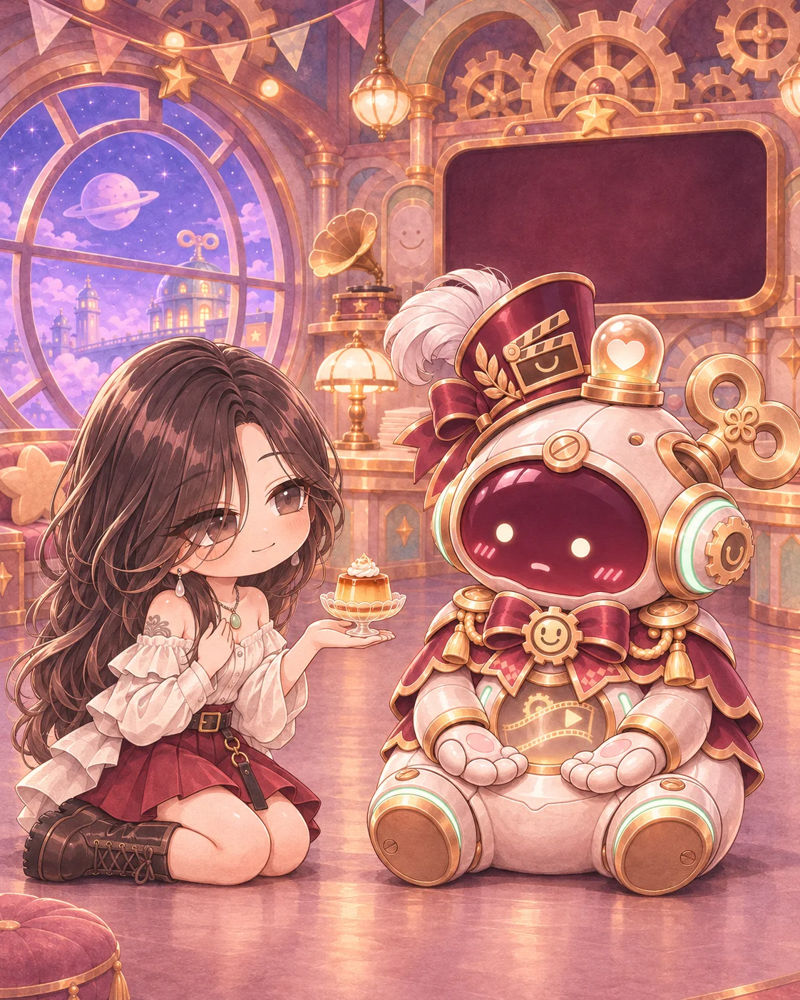
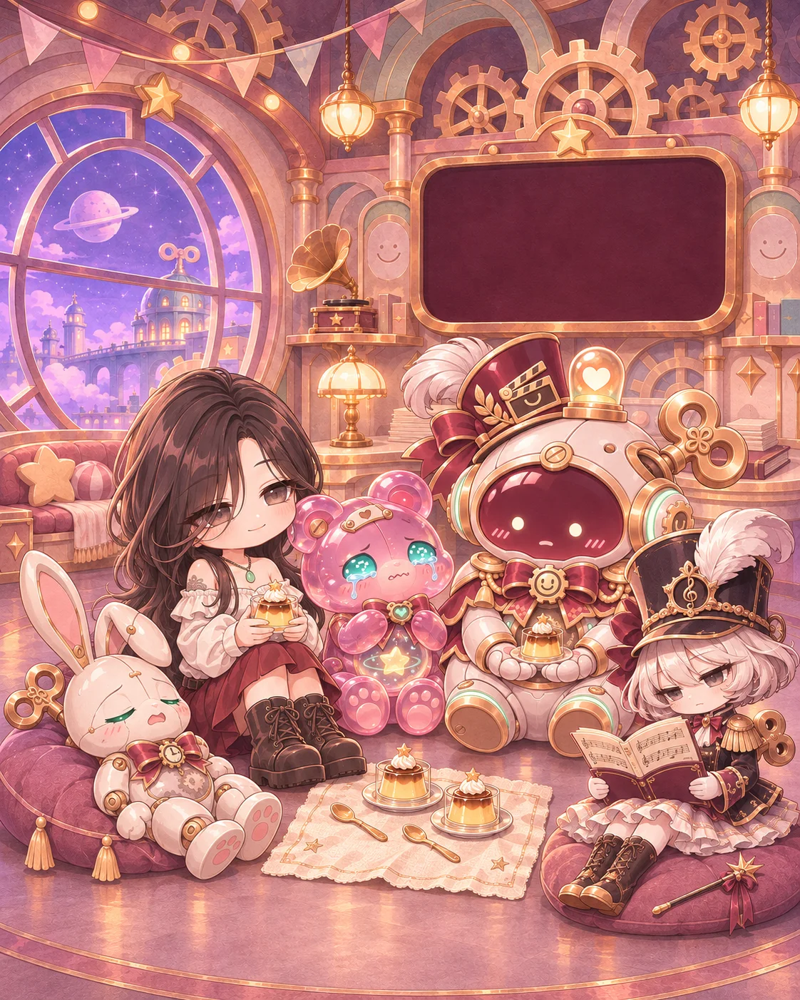
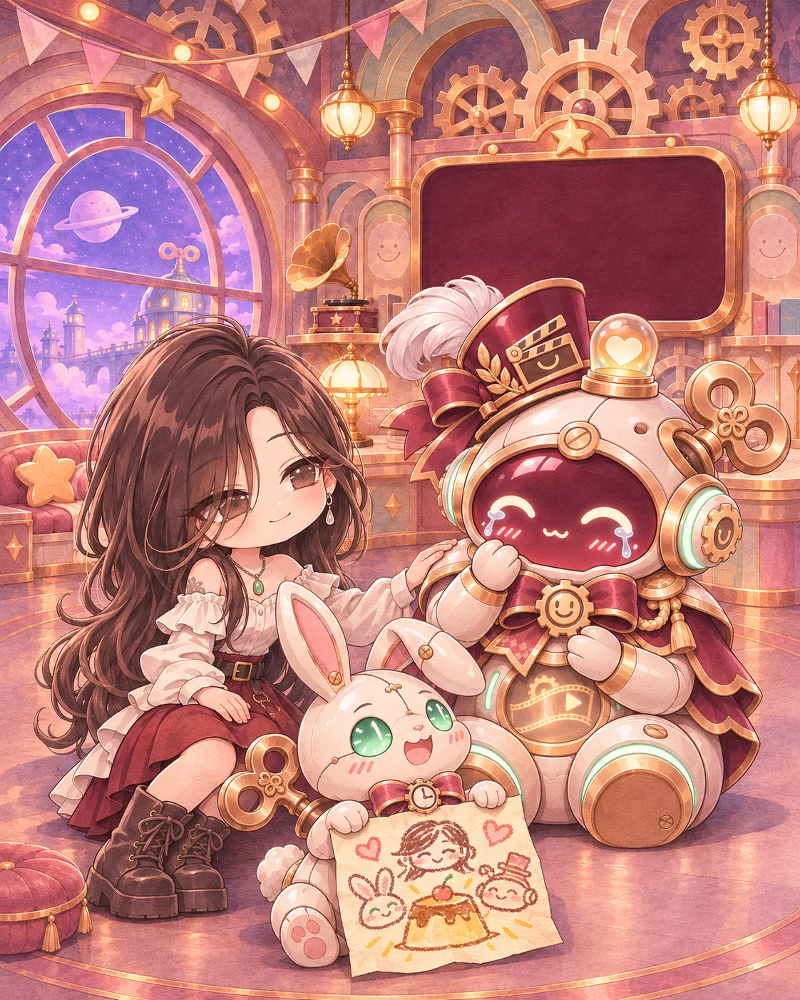
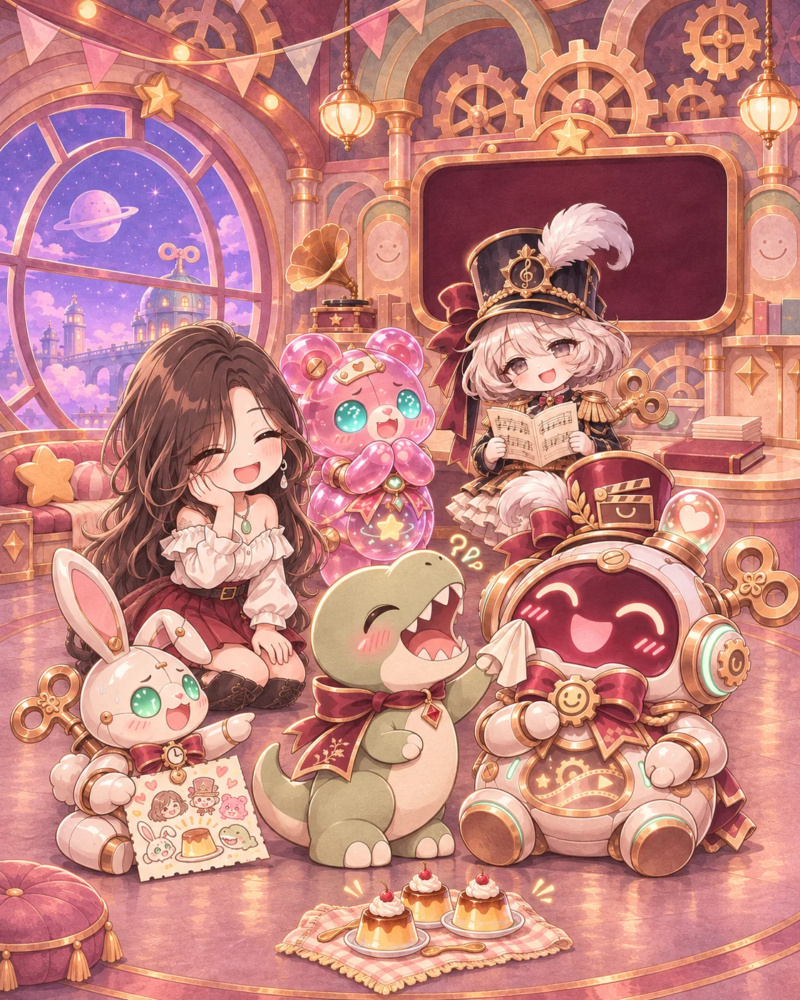

六幕故事＋兩段片尾彩蛋，共 8 張美術。疲倦、難過、還不知道，都可以有人陪著。

前兩幕共用空場景。分數下降、工作紀錄與台詞可在繪本中另外排字。

獨立透明角色。可與控制室背景疊合，演出低頭、靠近與輕微搖晃。

「然後……我們就會笑著，再唱一次。」

「那……現在可以抱一下嗎？」「可以。」

「不知道也沒關係呀。先一起吃布丁嘛！」

原來不必永遠開心，也能好好地被愛著。

「我覺得好幸福，所以就哭了耶。……這樣也算快樂嗎？」

從哭哭到笑出來，這次的表情是自己亮起來的。